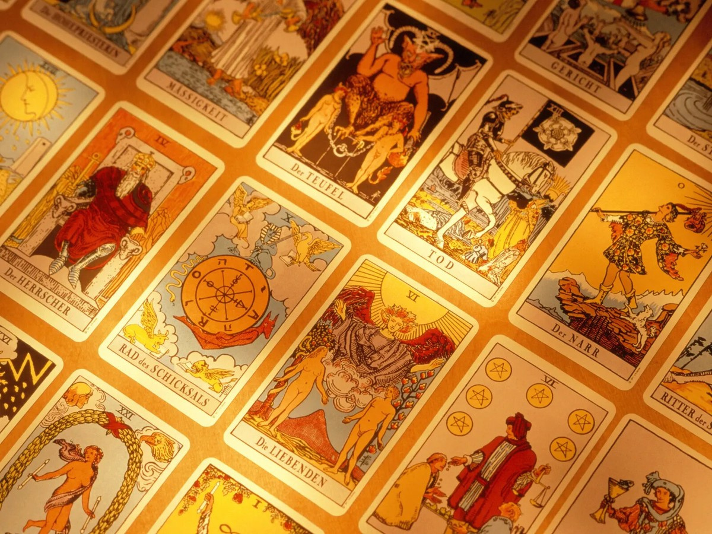

RTT Therapy
Rapid Transformational Therapy helps uncover limiting beliefs, emotional blocks and patterns, supporting you to move forward with greater freedom, confidence and self-understanding.
Enquire about RTTSpiritual therapy and intuitive guidance with Lynn
RTT therapy, tarot guidance and crystal healing with Lynn.
True North Therapy helps you reconnect with yourself, find clarity and move forward with warmth, guidance and support. This is a gentle space for reflection, release and a deeper sense of direction.

A calm, personal therapy space for reflection, release and gentle direction.
About Lynn
Lynn brings together therapeutic training, intuitive wisdom and a lifetime of welcoming people into spaces where they can feel at ease.
Lynn founded True North Therapy after a long and meaningful journey through healing, spirituality and human connection. Recently qualified as an RTT Therapist after more than two years of dedicated study, she brings a fresh professional focus to a lifetime of listening deeply to people and their stories.
Her intuitive work began many years earlier. With over 30 years of tarot reading experience and 10 years of crystal healing practice, Lynn has learned how powerful it can be when someone feels truly seen, heard and gently supported.
As a widow, Lynn understands that life can ask us to begin again in ways we never expected. Her whole career in travel and hospitality also gave her a natural love of meeting new people, understanding different paths and making others feel welcome.
Her spiritual journey has taken her to Borneo, Japan, China and Thailand, where she explored therapies, spirituality and the many ways people heal, connect and find meaning. Lynn believes in angels and quiet spiritual guidance, holding that belief softly within a grounded, compassionate approach.
Services
Choose the kind of session that feels right for where you are now. Each service is offered with care, respect and a gentle focus on helping you reconnect with your own inner wisdom.
Rapid Transformational Therapy helps uncover limiting beliefs, emotional blocks and patterns, supporting you to move forward with greater freedom, confidence and self-understanding.
Enquire about RTT
Tarot is offered as a reflective, intuitive guidance tool for clarity, self-understanding and decision making, helping you explore what may already be stirring within.
Enquire about tarotCrystal healing is a calming, grounding, energy-based practice designed to support relaxation, balance and emotional wellbeing in a peaceful, nurturing setting.
Enquire about crystal healing
Spiritual Journey
Lynn's approach is rooted in listening first. She draws on travel, people, stories and different cultures, while keeping every session personal, warm and down to earth.
Her belief in angels is present as a gentle thread rather than a performance. The heart of her work is to help people feel safe enough to pause, reflect and be supported as they find their next step.
Kind Words
"Lynn created such a peaceful space. I felt listened to, understood and gently guided."
Client testimonial placeholder
"The session helped me see things with more clarity and compassion for myself."
Client testimonial placeholder
"Warm, intuitive and calming. I left feeling more grounded and hopeful."
Client testimonial placeholder
Book or Enquire
If you feel drawn to work with Lynn, send a message with the service you are interested in. She will get back to you with availability and next steps.